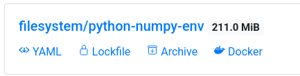
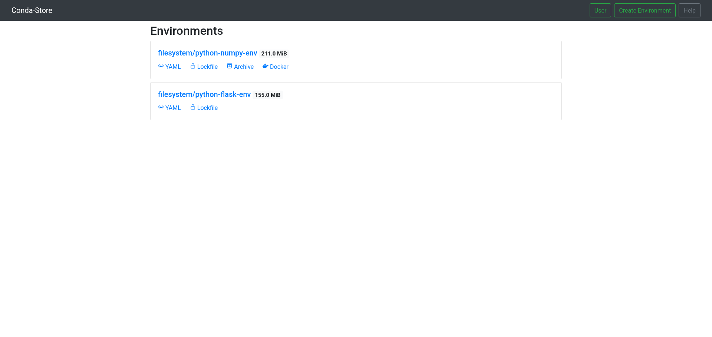
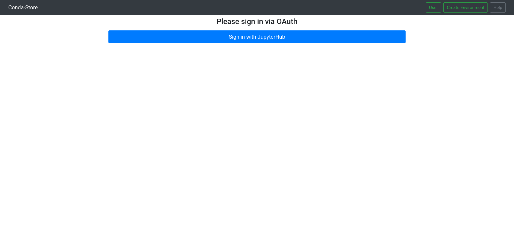
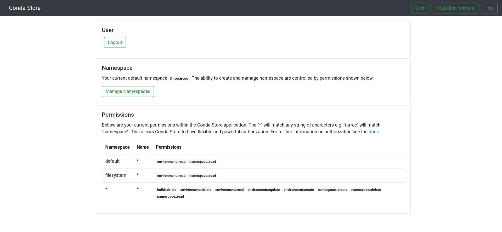
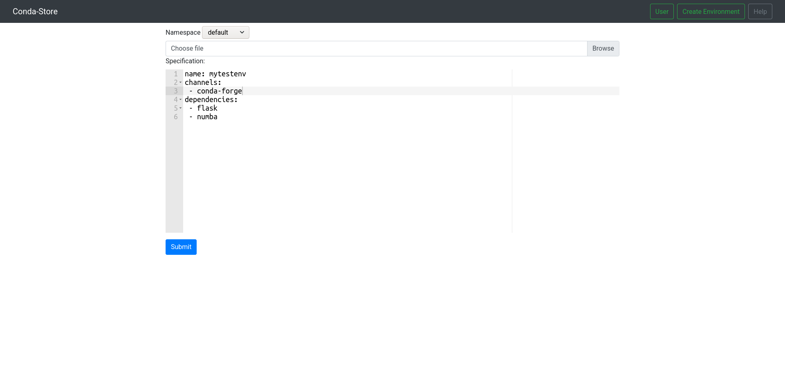
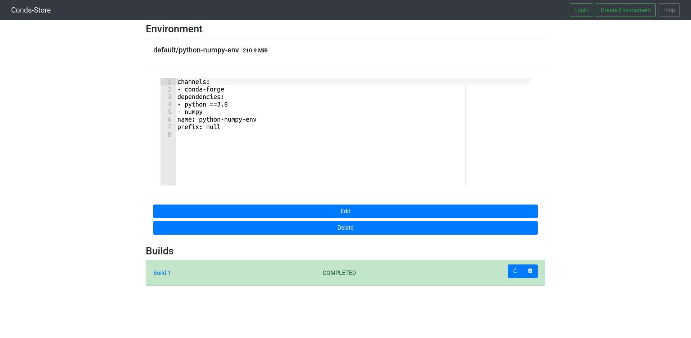
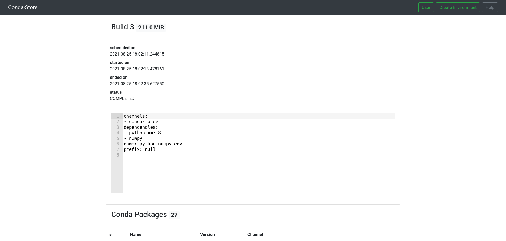
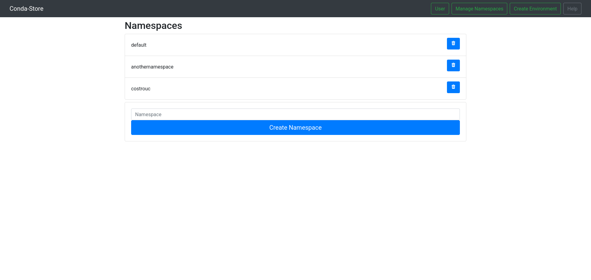

User Guide#
Environments#
Below is an image of a single environment. The following will describe
what the yaml, lockfile, archive, and docker represent.

Pinned YAML#
A pinned YAML file is generated for each environment is built. This
includes pinning of the pip packages as well. Note that there are
cases where the completely pinned packages do not solve. Packages are
routinely marked as broken and removed. Note however
conda-forge
has a policy that packages are never removed but are marked as
broken. Most channels do not obey this policy. When you click the
yaml button a YAML file will then be downloaded. To install the
environment locally run the following.
conda env create -f <environment-filename>
Conda lockfile#
A Conda lockfile is a representation of only the Conda dependencies in
a given environment. The lockfile feature was inspired from
conda-lock. This file
will not reproduce the pip dependencies in a given environment. When
working with Conda it is generally not a good idea to mix Conda and
pip dependencies. Click the lockfile icon to download the
lockfile. First install conda-lock if it is not already installed.
conda install -c conda-forge lockfile
Install the locked environment file from conda-store.
conda-lock install <lockfile-filename>
Conda-Pack archive#
Conda-Pack is a package for
creating tarballs of given Conda environments. Creating a Conda archive
is not as simple as packing and unpacking a given directory. This is
due to the base path for the environment that may
change. Conda-Pack handles all
of these issues. Click the archive button and download the given
environment. The size of the archive will be less than the size seen
on the environment UI element due to compression.
conda install -c conda-forge conda-pack
Install the Conda-Pack tarball. The directions are slightly
complex. Note
that my_env can be any name in any given prefix.
mkdir -p my_env
tar -xzf <conda-pack-tarfile>.tar.gz -C my_env
source my_env/bin/activate
conda-unpack
Docker Registry#
conda-store acts as a docker registry which allows for interesting
ways to handle Conda environment. In addition this registry leverages
conda-docker which
builds docker images without docker allowing for advanced caching,
reduced image sizes, and does not require elevated privileges. Click
on the docker link this will copy a url to your clipboard. Note the
beginning of the url for example localhost:5000/. This is required to tell
docker where the docker registry is located. Otherwise by default it
will try and user docker hub. Your url will likely be different.
The conda-store docker registry requires authentication via any
username with password set to a token that is generated by visiting
the user page to generate a token. Alternatively in the
conda_store_config.py you can set
c.AuthenticationBackend.predefined_tokens which have environment
read permissions on the given docker images needed for pulling.
docker login -u token -p <conda-store-token>
docker pull <docker-url>
docker run -it <docker-url> python
General usage#
docker run -it localhost:5000/<namespace>/<environment-name>
If you want to use a specific build (say one that was built in the
past and is not the current environment) you can visit the specific
build that you want in the UI and copy its docker registry tag
name. The tag name is a combination of <specification-sha256>-<build date>-<build id>-<environment name> that we will refer to as build
key. An example would be
localhost:5000/filesystem/python-numpy-env:583dd55140491c6b4cfa46e36c203e10280fe7e180190aa28c13f6fc35702f8f-20210825-180211-244815-3-python-numpy-env.
docker run -it localhost:5000/<namespace>/<environment-name>:<build_key>
On Demand Docker Image#
conda-store has an additional feature which allow for specifying the packages within the docker image name itself without requiring an actual environment to be created on the conda-store UI side.
The following convention is used
<registry-url>:<registry-port>/conda-store-dynamic/. After
conda-store-dynamic you specify packages needed separated by
slashes. Additionally you may specify package constraints
for example <=1.10 as .lt.1.10.
As full example support we want python less than 3.8 and NumPy
greater than 1.0. This would be the following docker image
name. <registry-url>:<registry-port>/conda-store-dynamic/python.lt.3.8/numpy.gt.1.0. conda-store
will then create the following environment and the docker image will
download upon the docker image being built.
conda-store UI#
/ Home Page#

The home page shows all of the available environments in the form
<namespace>/<environment-name>. If you are authenticated there with
be a User button in the top right hand corner to view information
about the currently logged in user. Otherwise there is a login
button and few if any environments will be visible. Additionally there
is a convenient Create Environment button to easily create a given
environment. There is a Docs button that will take you to this
documentation at any time.
Shortcuts are available below each of the available environments that allow you to download or view the Conda lockfile, YAML, or Conda-Pack files.
/login/ Login#

If you are unauthenticated there is a login button on the top
navigation bar. This will direct you to the login page. The example
above shows what you will get with JupyterHub authentication.
/user/ User#

Once a user has completed the authentication flow they will be directed to the user page. This page gives information about the current authenticated user along with the permissions.
/create/ Create Environment#

A user authenticated or unauthenticated has set permissions that allow
the user to create environments in a given namespace. Currently the
create page allows for dragging and uploading of current
environment.yaml files in the UI. The specification is the format of
a traditional environment.yaml and will report errors if there are
issues with the format of the environment file.
/environment/<namespace>/<name>/ Environments#

The environment page contains a lot of information for the
developer. First we see the environment name and namespace along with
the disk space that the environment consumes. Right below this
information is the full environment.yaml specification of the
currently active build. Users can quickly edit this existing
environment by clicking the edit button. Additionally the entire
environment can be deleted via the delete button.
Below this is a list of the current builds of the given
environment. The environment highlighted in green is the current
build for the given environment that is active. The environment
highlighted in grey indicates that the build was deleted. Even
though a build may be deleted the logs, lockfile, and a other build
information is preserved for the record.
For each build several options are available to the user:
The
checkmarkicon allow the user to switch that given build to the active build for the environment. This may be useful if you need to rollback a given environment if the new build environment caused some scripts to fail.The
refreshicon indicates that a user would like the given environment to build again. Condaenvironment.yamlfiles are not reproducible thus this will likely lead to an entirely new solve. This is useful when you would like to update all the packages in a given environment without having to change the specification.The
trashcan iconmarks the given build for deletion.CondaStore.build_artifacts_kept_on_deletionallows some artifacts to be kept on deletion. These include logs, YAML, etc.
/build/<build_id> builds#

The build page gives all the information about a given build in conda-store. At the top we see high level build metadata.
conda-store downloads Conda channel data so that it fully understands the packages that exist within a given environment. A list is provided to the user of all packages within that environment.
Below this are all artifacts associated with a given build e.g lockfile, pinned YAML specification, Conda-Pack, and docker image.
Finally a log of the given build regardless of whether the build succeeded or failed.
/namespace/ manage namespaces#

This namespace page allows a user with correct permissions to list, create, and delete namespaces. Note that the deletion of a namespace is destructive and deletes all environments and builds within that namespace.
conda-store cli#
The conda-store client can be easily installed via pip and conda.
pip install conda-store
conda install -c conda-forge conda-store
The base cli is inspired by tools such as
conda,
kubectl, and
docker. The base commands are
download, info, list, run, wait.
$ conda-store --help
Usage: conda-store [OPTIONS] COMMAND [ARGS]...
Options:
--conda-store-url TEXT conda-store base url including prefix
--auth [none|token|basic] conda-store authentication to use
--no-verify-ssl Disable tls verification on API requests
--help Show this message and exit.
Commands:
download Download artifacts for given build
info Get current permissions and default namespace
list
run Execute given environment specified as a URI with COMMAND
solve Remotely solve given environment.yaml
wait Wait for given URI to complete or fail building
conda-store run#
One of the motivating features of the conda-store cli is that you
can directly execute conda-store environments that exist remotely.
conda-store run devops/datascience -- python -m "print(1)"
conda-store solve#
conda-store is capable to remote solves of environment files. If requested conda-store can perform intelligent solves with caching.
conda-store download#
conda-store info#
conda-store wait#
conda-store list [namespace|environment|build]#
conda-store shebang#
conda-store can be used as a
shebang within Linux
allowing users to embed Conda environments within scripts for
reproducibility. Basic usage is as follows. Notice that the
conda-store run command is just the normal usage of the command.
#!/usr/bin/env conda-store
#! conda-store run <namespace>/<environment-name>:<build-id> -- python
print('script running within the conda-store environnent')
The first line must begin with the shebang #! along with ending in
conda-store. You cannot put arguments on the first line due to
limits in the shebang specification. Additional lines are then added
starting with #! conda-store run ... with are then used as arguments
to conda-store run.
The path to the script being run is always appended as the last argument to the command so the example above is interpreted as:
conda-store run <namespace>/<environment-name>:<build-id> -- python <shebang-filename>
This feature was heavily inspired by nix-shell
shebangs.